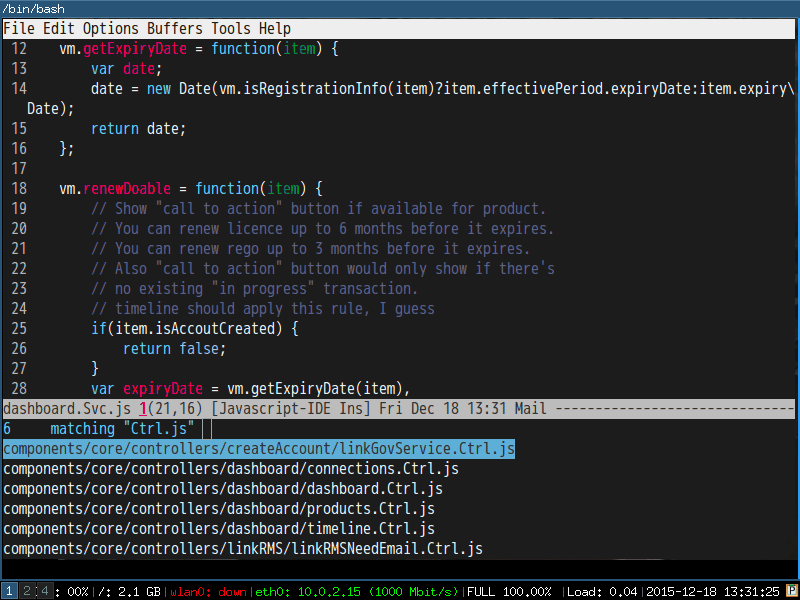
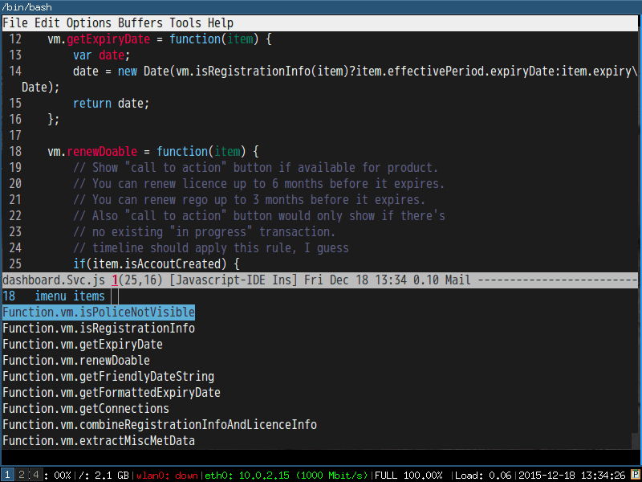
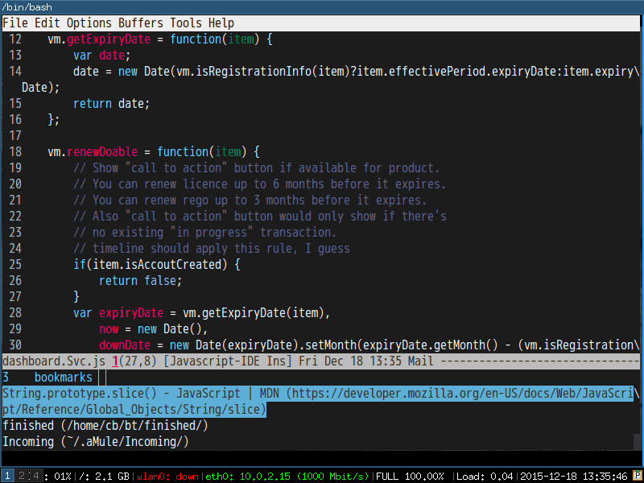

Hello Ivy-mode, bye Helm
I love Ivy-mode/Swiper because it's quick and easy to extend. I replaces my Helm setup to ivy-mode setup.
I will demostrate how I use ivy-mode at first. Then I will give the full code.
Please note I only use the API `ivy-read` from ivy-mode.
Demo
M-x counsel-git-grep-yank-line
Use git-grep to grep the lines. Then copy the line into kill right without opening new file.

M-x counsel-git-find-my-file
Find my file under git version control in recent N weeks.

M-x ivy-imenu-goto
Imenu. It's quick.

M-x ivy-bookmark-goto
Quick and customizable.

Code
Swiper 7.0+ required.
;; {{ @see http://oremacs.com/2015/04/19/git-grep-ivy/
(defun counsel-git-grep-or-find-api (fn git-cmd hint open-another-window)
"Apply FN on the output lines of GIT-CMD. HINT is hint when user input.
IF OPEN-ANOTHER-WINDOW is true, open the file in another window."
(let ((default-directory (locate-dominating-file
default-directory ".git"))
(keyword (if (region-active-p)
(buffer-substring-no-properties (region-beginning) (region-end))
(read-string (concat "Enter " hint " pattern:" ))))
collection val lst)
(setq collection (split-string (shell-command-to-string (format git-cmd keyword))
"\n"
t))
(when (and collection (> (length collection) 0))
(setq val (if (= 1 (length collection)) (car collection)
(ivy-read (format " matching \"%s\":" keyword) collection)))
(funcall fn open-another-window val))))
(defun counsel-git-grep (&optional open-another-window)
"Grep in the current git repository.
If OPEN-ANOTHER-WINDOW is not nil, results are displayed in new window."
(interactive "P")
(let (fn)
(setq fn (lambda (open-another-window val)
(let ((lst (split-string val ":")))
(funcall (if open-another-window 'find-file-other-window 'find-file)
(car lst))
(let ((linenum (string-to-number (cadr lst))))
(when (and linenum (> linenum 0))
(goto-char (point-min))
(forward-line (1- linenum)))))))
(counsel-git-grep-or-find-api fn
"git --no-pager grep --full-name -n --no-color -i -e \"%s\""
"grep"
open-another-window)))
(defun counsel-git-find-file (&optional open-another-window)
"Find file in the current git repository.
If OPEN-ANOTHER-WINDOW is not nil, results are displayed in new window."
(interactive "P")
(let (fn)
(setq fn (lambda (open-another-window val)
(funcall (if open-another-window 'find-file-other-window 'find-file) val)))
(counsel-git-grep-or-find-api fn
"git ls-tree -r HEAD --name-status | grep \"%s\""
"file"
open-another-window)))
(defun counsel-git-grep-yank-line (&optional insert-line)
"Grep in the current git repository and yank the line.
If INSERT-LINE is not nil, insert the line grepped"
(interactive "P")
(let (fn)
(setq fn (lambda (unused-param val)
(let ((lst (split-string val ":")) text-line)
;; the actual text line could contain ":"
(setq text-line (replace-regexp-in-string (format "^%s:%s:" (car lst) (nth 1 lst)) "" val))
;; trim the text line
(setq text-line (replace-regexp-in-string (rx (* (any " \t\n")) eos) "" text-line))
(kill-new text-line)
(if insert-line (insert text-line))
(message "line from %s:%s => kill-ring" (car lst) (nth 1 lst)))))
(counsel-git-grep-or-find-api fn
"git --no-pager grep --full-name -n --no-color -i -e \"%s\""
"grep"
nil)))
(defvar counsel-my-name-regex ""
"My name used by `counsel-git-find-my-file', support regex like '[Tt]om [Cc]hen'.")
(defun counsel-git-find-my-file (&optional num)
"Find my files in the current git repository.
If NUM is not nil, find files since NUM weeks ago.
Or else, find files since 24 weeks (6 months) ago."
(interactive "P")
(let (fn cmd)
(setq fn (lambda (open-another-window val)
(find-file val)))
(unless (and num (> num 0))
(setq num 24))
(setq cmd (concat "git log --pretty=format: --name-only --since=\""
(number-to-string num)
" weeks ago\" --author=\""
counsel-my-name-regex
"\" | grep \"%s\" | sort | uniq"))
;; (message "cmd=%s" cmd)
(counsel-git-grep-or-find-api fn cmd "file" nil)))
;; }}
(defun ivy-imenu-get-candidates-from (alist &optional prefix)
(cl-loop for elm in alist
nconc (if (imenu--subalist-p elm)
(ivy-imenu-get-candidates-from
(cl-loop for (e . v) in (cdr elm) collect
(cons e (if (integerp v) (copy-marker v) v)))
(concat prefix (if prefix ".") (car elm)))
(and (cdr elm) ; bug in imenu, should not be needed.
(setcdr elm (copy-marker (cdr elm))) ; Same as [1].
(list (cons (concat prefix (if prefix ".") (car elm))
(copy-marker (cdr elm))))))))
(defun ivy-imenu-goto ()
"Go to buffer position"
(interactive)
(let ((imenu-auto-rescan t) items)
(unless (featurep 'imenu)
(require 'imenu nil t))
(setq items (imenu--make-index-alist t))
(ivy-read "imenu items:"
(ivy-imenu-get-candidates-from (delete (assoc "*Rescan*" items) items))
:action (lambda (k) (goto-char k)))))
(defun ivy-bookmark-goto ()
"Open ANY bookmark"
(interactive)
(let (bookmarks filename)
;; load bookmarks
(unless (featurep 'bookmark)
(require 'bookmark))
(bookmark-maybe-load-default-file)
(setq bookmarks (and (boundp 'bookmark-alist) bookmark-alist))
;; do the real thing
(ivy-read "bookmarks:"
(delq nil (mapcar (lambda (bookmark)
(let (key)
;; build key which will be displayed
(cond
((and (assoc 'filename bookmark) (cdr (assoc 'filename bookmark)))
(setq key (format "%s (%s)" (car bookmark) (cdr (assoc 'filename bookmark)))))
((and (assoc 'location bookmark) (cdr (assoc 'location bookmark)))
;; bmkp-jump-w3m is from bookmark+
(unless (featurep 'bookmark+)
(require 'bookmark+))
(setq key (format "%s (%s)" (car bookmark) (cdr (assoc 'location bookmark)))))
(t
(setq key (car bookmark))))
;; re-shape the data so full bookmark be passed to ivy-read:action
(cons key bookmark)))
bookmarks))
:action (lambda (bookmark)
(bookmark-jump bookmark)))
))